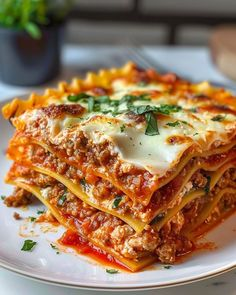

Lasanha

Ingredientes
- 8 folhas de lasanha
- 500g de carne moída
- 1 cebola picada
- 2 dentes de alho picados
- 1 xícara de molho de tomate
- 1 xícara de queijo ralado (parmesão ou mussarela)
- 1/2 xícara de queijo cremoso (ricota ou catupiry)
- 1 ovo batido
- Sal e pimenta a gosto
- Óleo para untar
Modo de preparo
- Cozinhe as folhas de lasanha em água fervente.
- Em uma panela, cozinhe a carne moída com a cebola e o alho.
- Adicione o molho de tomate e tempere com sal e pimenta.
- Em uma tigela, misture o queijo ralado, o queijo cremoso e o ovo batido.
- Monte a lasanha:
- Camada de molho de carne.
- Camada de folhas de lasanha.
- Camada de queijo.
- Repita as camadas.
- Cubra com queijo ralado e leve ao forno pré-aquecido a 180°C por 30-40 minutos.